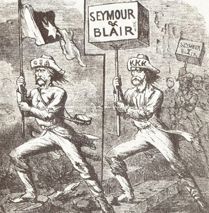

|
"Redemption" refers to the 10-year period after Congressional
Reconstruction, in which conservative white Southern Democrats
recaptured their states from Republican rule. White Southerners were
determined to stop African Americans and white Republicans sustaining
their power. With the aid of such institutions and organizations as
Union Leagues and the Freedmen's Bureau, the South's former slaves were
swiftly making inroads into American politics. Freedmen were winning
elected office on the Republican Party ticket, and filling government
jobs on every level. The South's political practices were changing
radically in the first few years after the Civil War, and in the view of
the Democrats, for the worse.
In South Carolina, the birthplace of secession, by 1872 African
Americans held four of the state's five seats in Congress. The
Enforcement Acts and the Ku Klux Klan Act were passed by the federal
government to sustain African American political and civil rights in the
South. In the early 1870s more and more Republican-dominated southern
legislatures were passing laws against discrimination in public
facilities and on trains. While Reconstruction brought a capable
political class of African Americans to power in the states of the old
|

This 1868 cartoon suggests that the soldiers
of the Confederacy, the Ku Klux Klan, and Southern "redeemer"
Democrats are all one and the same.
|
Confederacy, these successes were short-lived. White southerners began
moving to "redeem" their states by taking back control of the politics
of their states and the region. The increasing state and federal push
for civil and political rights stirred more vehement opposition on the
part of white southern Democrats. Many Republican ballot box successes
were met with outright violence. Murders, beatings, lynchings, tar and
featherings, and the like were potential outcomes of voting or in any
way taking part in the political system for the freedmen and women as
well as white Republicans in the South. The KKK and other secret
organizations of white southerners dedicated themselves to ending what
they called "Black Republicanism" or "Negro Rule" in the South through
violence and economic intimidation.
While out-right violence tended to bring federal reactions like the
Ku Klux Klan Act, the northern United States was showing signs fatigue
with Reconstruction. President Grant made it clear that he would
tolerate no outright refusals of his orders by the former Confederates,
but white Southerners believed that if the South refrained from gross
violations of law and custom, Grant would allow them to take back a
certain degree of control over their states. With this in mind, not all
southern Democrats aligned themselves with violence in their attempt to
redeem their states from Republican control. When running for governor
of South Carolina in 1876, Southern Democrat Wade Hampton declared that
white Democratic candidates, like himself, wanted African American votes
and that his Party was pledged to defending the "rights of the colored
man."
Despite the temperate nature of Hampton's term in office, South
Carolina was a "redeemed" state in that the Democratic Party had
regained control of state politics. Republican Party election margins
across the South began to slide by 1873. Some white Republicans in the
South began to leave the Party as African Americans became more and more
prominent, despite the fact that white Republicans largely controlled
the Party in the South. Northern Carpetbaggers began to head home in
the face of increasing violence. The Republican Party was
disintegrating in the South and that disintegration was allowing the
Democratic Party to reassert control over the region.
Issues such as the economic crisis of 1873 and the Indian Wars of the
Plains claimed northern attention and diverted interest from
"reconstructing" the former Confederacy. The "Redeemers" took back
power in Georgia, North Carolina, and Virginia relatively quickly. By
the end of Grant's eight years in office, all of the Republican
governments of the South had disappeared except for Louisiana and South
Carolina. While African Americans continued to vote Republican in large
numbers, voting became increasing difficult for freedmen as newly
elected Democratic officials instituted measures such as poll taxes,
literacy tests, and grandfather clauses to reduce black voting.
Ultimately, the Compromise of 1876, which put Republican Rutherford
B. Hayes in the White House in exchange for the removal of troops from
the South, proved to be the end of Reconstruction and the success of
Redemption. Without U.S. Army troops to enforce federal voting
legislation and stop violence, African-American voters were
disenfranchised. Redemption marked a return to politics "as usual" in
the South, generally with the antebellum elite in control once again.
Most Southern African Americans, who had made so many political strides
during Reconstruction, would not regain the vote until the 1960s.
Source: Joan Waugh, ed., Facts on File Encyclopedia of American
History: Civil War and Reconstruction, 1856 to 1869 (New York: Facts on
File, 2003), 296-97.
|